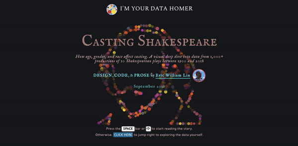
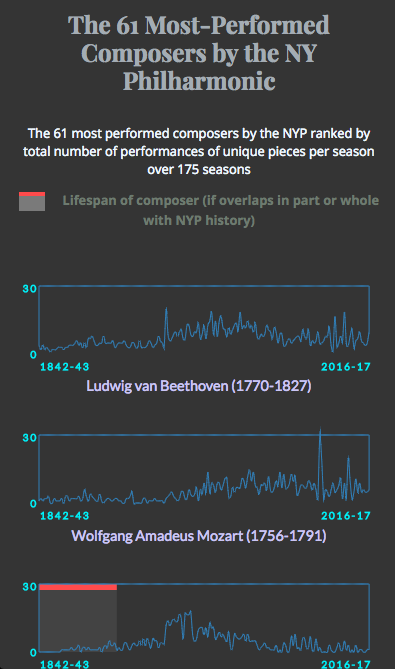
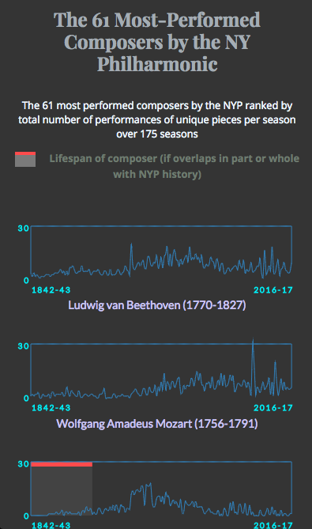

November 2020 news: I created an exclusive new piece–a cocktail diary data viz–for the award-winning Market Cafe Magazine's latest issue ("Data Cookbook"). It's a limited run of 800 copies so order your copy before they sell out!
Interactive Data Visualizations
Casting Shakespeare: How age, gender, and race affect casting (September 2018)
AWARDS
-
-
WINNER, the best visual and data-driven stories of 2018
PRESS
-
Data Viz Today with Alli Torban
Tools: Python/Beautiful Soup (data collection, web scraping), D3.js (interactivity, svg rendering, basic stats calculations), Moment.js, coördinator
Pulsecheck: Is Orchestral Music Still a Living Art Form in 2017? (November 2017)

PRESS
-
Visualising Data
 


Source data: New York Philharmonic GitHub page
Tools: D3.js, ScrollMagic